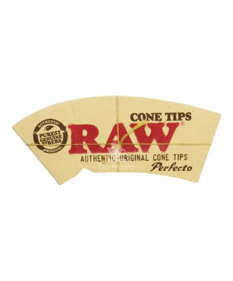
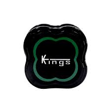
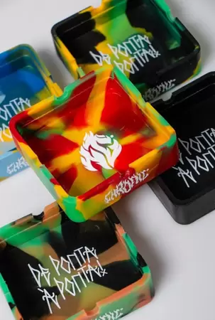
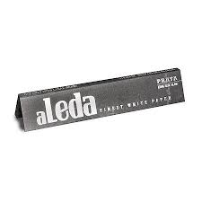

SEJA BEM VINDO A GANJASHOP, SUA BRISA É O NOSSO LUCRO!!
Afim de esquecer os problemas ou relaxar? conheça nossos artigos e acessórios ganja, os mais buscados na região em tabacaria, qualidade que te leva as nuvens!! Ohe nosso catálogo e desfrute dos nossos produtos.
Piteira de Vidro Longa Sadhu Headshop 5 x 60mm
Piteira de Vidro Longa Sadhu Headshop 5 x 60mm, ideal para queimar suas ervas enrolando a seda na parte externa da piteira. A piteira de vidro facilita na queima, permite fumar até o final e não entope a ponta, além de ajudar na Redução de Danos!.

Dichavador de Policarbonato Kings Grande
O Dichavador Kings Colors Grande possui 3 partes, é produzido com Policarbonato, material que apresenta alta resistência. Seu design permite mais conforto na hora de triturar, além de ser uma nova coleção, com cores vibrantes em néon.

Camiseta Chronic 420 Plus Size Big Original Marginal
Referência em streetwear, a Chronic, retrata em suas estampas e produtos todos os temas que as demais tratam como tabu, urbana, underground e diferenciada, a marca representa a rua e suas diversas tribos, buscando fugir da mesmice e engessamento do cenário.
Cinzeiro Chronic Silicone Quadrado
Vizu07
Cinzeiro de Silicone Quadrado Chronic De Ponta a Ponta
Apresentamos a linha Headshop da Chronic, produtos de qualidade para você que gosta curtir uma brisa com estilo, a coleção tem todos os tipos de acessorios para salvar sua sessão, itens persolizados para deixar sei kit pesado, vem com noiz!!!

Máquina para Enrolar Tabaco Sadhu Bolador
Apresentamos a você a Máquina de Enrolar da marca Sadhu, um produto de alta qualidade e design elegante na cor branca. Este bolador é ideal para quem procura praticidade e eficiência, pois suporta um comprimento máximo de papel de 110mm, tornando-o perfeito para suas necessidade

Seda aLeda Prata King Size Slim 33 Folhas
Seda aLeda Prata King Size Slim, 3 Livretos com 33 Folhas cada. Papel para enrolar cigarro ultrafino, de baixa combustão, produzido pela aLeda. Seda fina, com boa espessura e boa queima